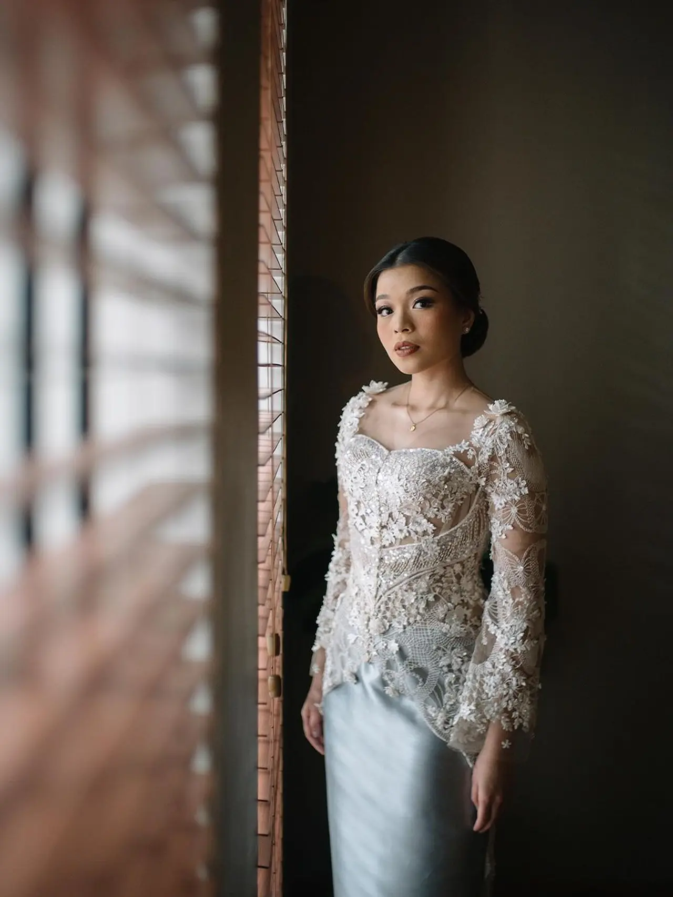

Duta Musik Terkini.
AISHA LAHTIBA

Penyiar
 1 Tahun
1 Tahun
Cerita/Pengalaman
Aisha Lahtiba Rachmansyah diketahui merupakan alumni Universitas Trisakti jurusan Ekonomi. Ia mengawali kariernya sebagai host dan announcer di berbagai acara. Satu diantara program yang pernah dipandunya adalah 'Podcast Aksi Nyata' yang berkolaborasi dengan Partai Perindo.
Sebagai sosok yang aktif dan kreatif, ia memiliki beragam hobi, mulai dari dance, bernyanyi, hingga menulis dan membaca novel. Dalam kesehariannya, Aisha bekerja sebagai announcer atau host di berbagai acara. Salah satu program yang pernah dipandunya adalah Podcast Aksi Nyata, yang diselenggarakan bersama Partai Perindo. Ia juga dikenal sebagai penyiar radio, dengan aktivitas terlihat dalam unggahan di TikTok saat membawakan acara di Radio Jak 101 FM.

"Aisha Lahtiba sangat aktif di media sosial, terutama di Instagram, di mana ia telah memiliki lebih dari 13 ribu pengikut."
Di akun Instagramnya, @aishalahtiba, ia sering berbagi momen-momen spesial dari kehidupannya. Melalui unggahannya, publik dapat melihat sisi lain dari Aisha, yang tidak hanya cantik tetapi juga berbakat.
dutafm